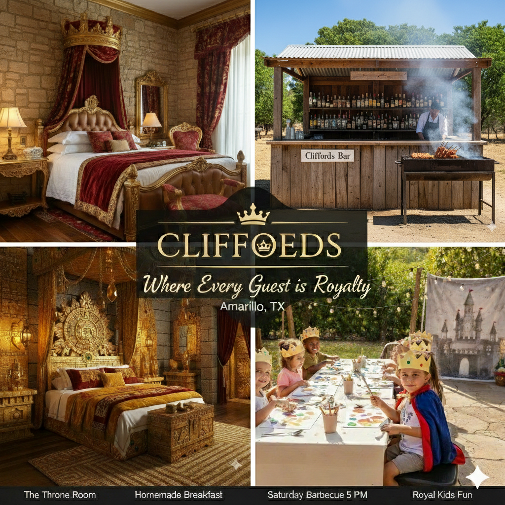

Welcome to Cliffoeds Bed & Breakfast!
Your Royal Retreat in Amarillo, TX
Step into a world of comfort and charm at Cliffoeds, where every guest is treated like royalty. Nestled in the heart of Amarillo, our uniquely themed rooms "The Royal Room" and "El Dorado Room" offer the perfect blend of elegance and relaxation. Enjoy a homemade breakfast each morning, then join us for our Saturday Barbecue at 5 p.m., featuring mouthwatering Texas style favorites, a lively outdoor bar for adults, and creative fun for the kids with crown making, painting, and a royal photo booth where they can dress up as kings, queens, princes, and princesses. Whether you’re here for a peaceful getaway or a weekend of laughter and local flavor, Cliffoeds invites you to unwind, indulge, and make memories fit for a king or queen.